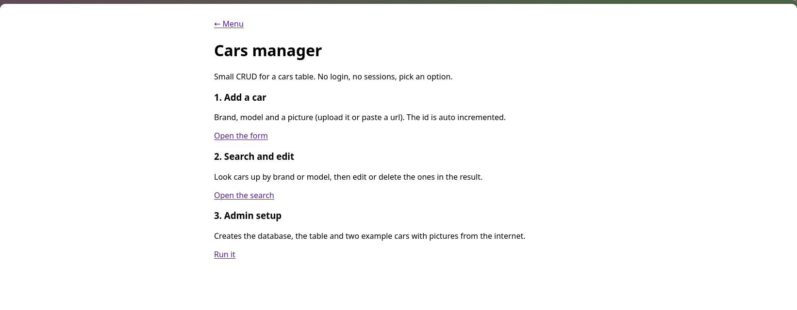
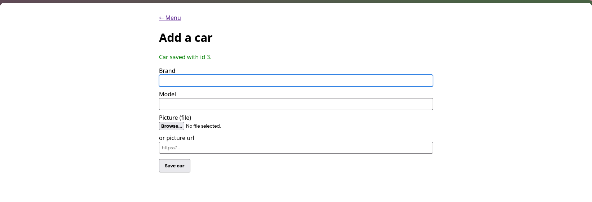
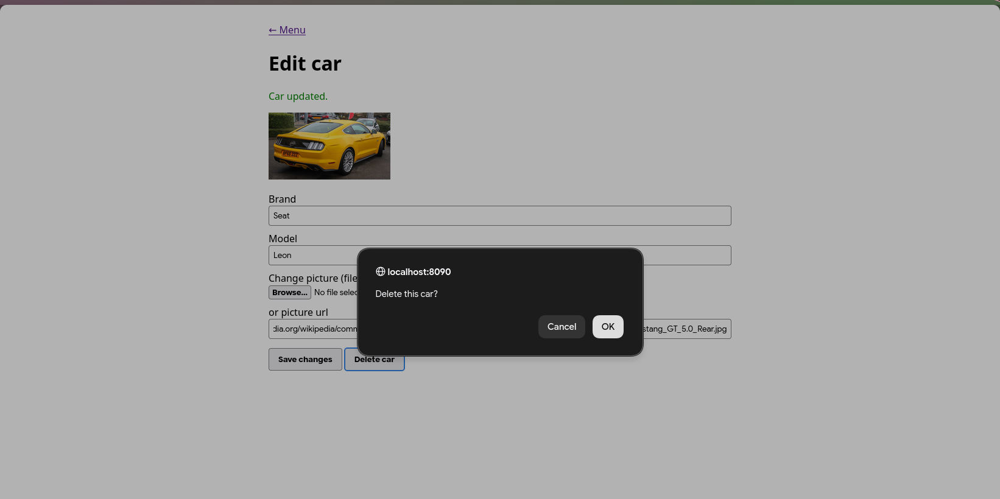
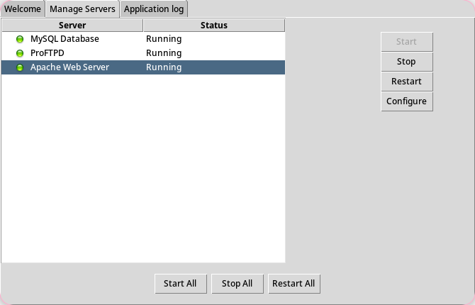
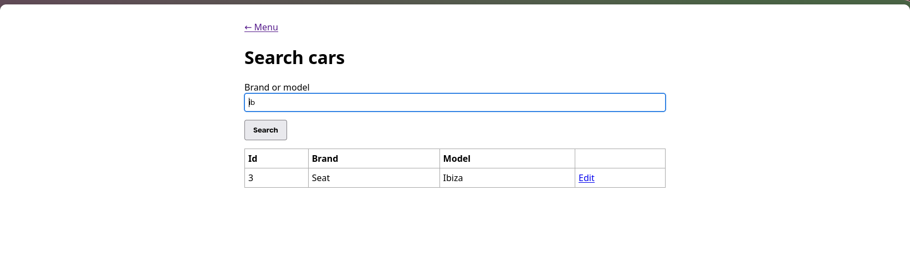
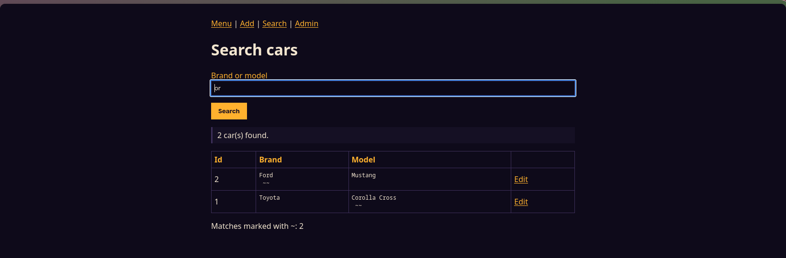
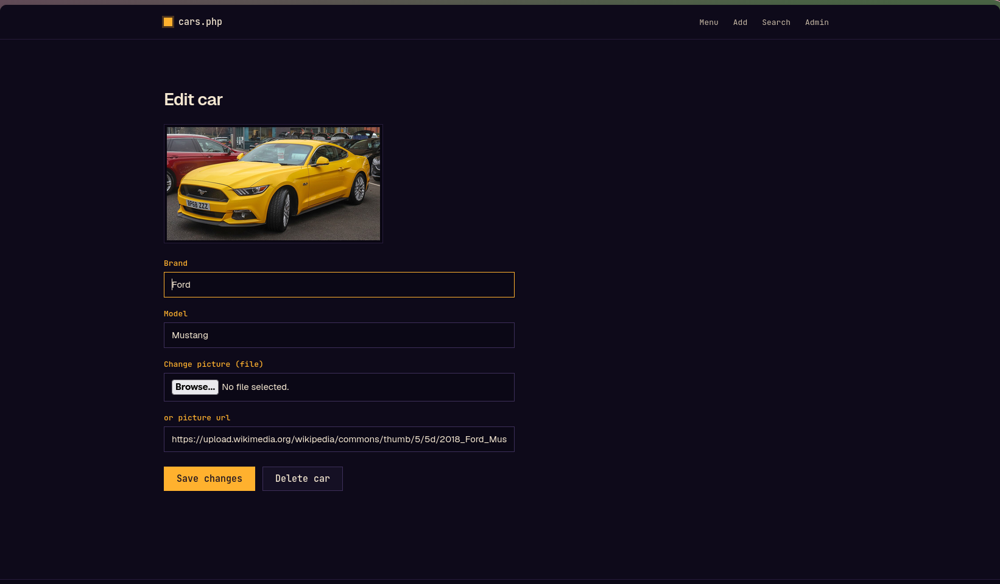
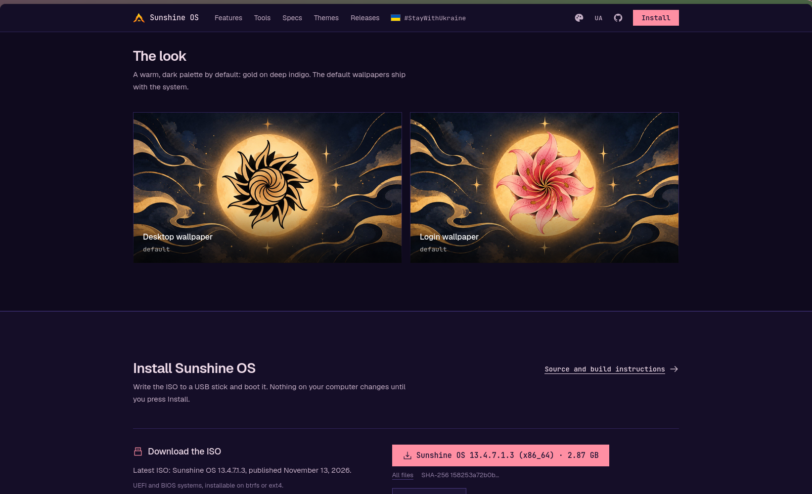

Admin: creates everything
Repository: https://github.com/tak0dan/cars-crud-php-mysql
+---+-----------------------------------+-----------------------------+ | # | What it does | File | +---+-----------------------------------+-----------------------------+ | 1 | Add a car: brand, model, picture | alta.php | | 2 | Search by brand or model | buscar.php | | 3 | Edit (shows the picture) / delete | editar.php | | 4 | Creates database, table, 2 cars | admin_crearbasedatosytablas | | | | .php | +---+-----------------------------------+-----------------------------+ | - | Menu | index.php | | - | Connection and small helpers | config.php | | - | Colours | style.css | +---+-----------------------------------+-----------------------------+
No sessions and no login. The search puts a ~ under the letters that match and counts them.
mariadb-install-db --no-defaults --datadir=/tmp/carsdb mariadbd --no-defaults --datadir=/tmp/carsdb --port=3307 --socket=/tmp/carsdb.sock & DB_HOST=127.0.0.1 DB_PORT=3307 php -d extension=pdo_mysql -S localhost:8090 open http://localhost:8090/admin_crearbasedatosytablas.php once then http://localhost:8090/
1. Start Apache and MySQL in the XAMPP control panel
2. Copy the folder to htdocs and call it "coches"
Windows: C:\xampp\htdocs\coches
Linux: /opt/lampp/htdocs/coches
3. open http://localhost/coches/admin_crearbasedatosytablas.php once
4. then http://localhost/coches/
Plain test, without XAMPP (http://localhost:8090)







XAMPP control panel

Plain test, with XAMPP (http://localhost/coches)



With the colours (same code, only style.css added)



Only the colours of my SunshineOS site (https://tak0dan.github.io/sunshineos-site/) are used, nothing else.
